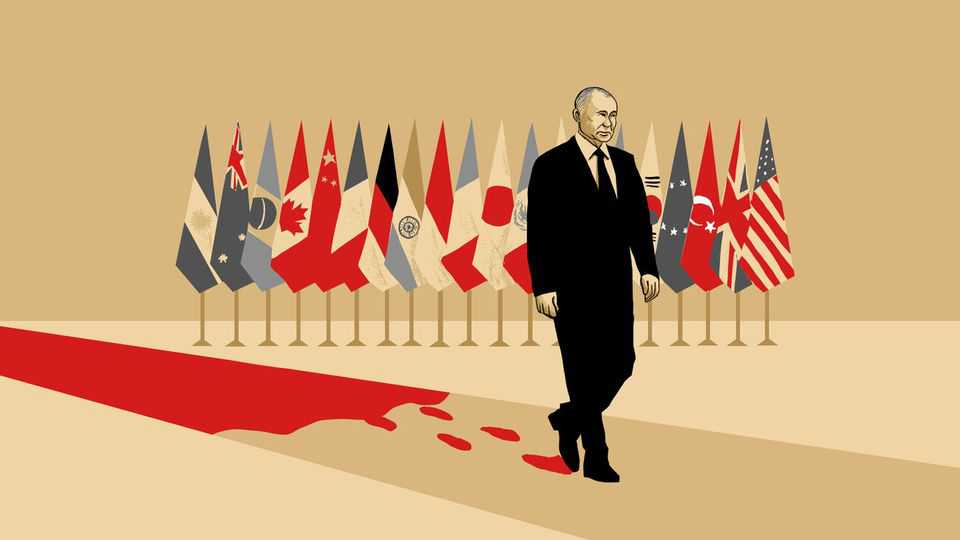

Vladimir Putin and the pariah problem
Emphasising the Russian leader’s wickedness must not come at Ukraine’s expense

Oct 8th 2026
VLADIMIR PUTIN is about to subject Ukraine and Europe to a winter of horror. Each week Russia’s president plumbs new depths of cruelty and recklessness, enraged by his failure to break Ukraine in the four-and-a-half years since he began his full-scale invasion. His missiles and jet-engined drones are turning Ukrainian cities into places of sleepless misery. Russian strikes are battering ports whose grain shipments once fed hundreds of millions. Beyond Ukraine, Russia is stepping up acts of sabotage across Europe and making ever-wilder nuclear threats towards the West.
These are the actions of a rogue state. Increasingly, Russia’s near neighbours are saying as much. Last month German government ministers formally blamed Russia for a narrowly thwarted drone attack on a cargo airport in Leipzig. For good measure, the ministers pledged to defend their country against “adversaries” bent on harm. Such language would have been unthinkable before the invasion of Ukraine, when successive German governments tiptoed around Russia as a supposedly indispensable energy supplier and European great power. On October 5th the head of Germany’s foreign-intelligence agency told the Bundestag that Russia is waging a dangerous “shadow war” to test Germany’s resolve. He added a warning that this winter Ukrainians will suffer “Russian attacks of a severity and brutality that we have not yet seen”.
Across northern Europe, especially in Nordic and Baltic countries close to Russia, politicians of the centre-left and -right condemn Mr Putin as impossible to trust. For four years the theory of victory has been that “Russia must not win and Ukraine must not lose”, for the sake of the international order but also for Europe’s future security. Allied governments agreed to send money and arms to keep Ukraine in the fight and maintain harsh sanctions on Russia until domestic opposition and economic pain change Mr Putin’s calculus or end his rule. Of late, though, such big players as Britain, France and Germany wonder whether the slogan should change to offer more hope to Russians outside the regime.
There are practical reasons for Ukraine’s allies to condemn Russia’s worst actions in loud terms. Mr Putin is growing more dangerous. Though he is beyond shame, naming his crimes might help deter him from further escalation. After sharing classified details of Russian shadow attacks with opposition leaders last month, the French president, Emmanuel Macron, explained their intended effect: to intimidate France into abandoning Ukraine. “The consequence will be the opposite,” he insisted. Mr Macron added a deterrent threat of his own. With a menacing nod to France’s formidable spies and cyber-warriors, he said that Russian hybrid attacks would “not go unanswered”. There are sound political reasons, too, for centrists to sound tough and to frame the war in Ukraine as a moral crusade against a rogue Russia. In France and across Europe, their rivals in populist parties are hoping to gain from voter fatigue with the war.
Then there is the detail that Mr Putin really is a pariah. Alas, calling Russia’s leader a rogue may also be a trap. The Ukraine war is deadlocked and the allies’ theory of victory may never work. If Mr Putin’s will to fight is not broken by economic pain and domestic discontent, then Ukraine and allies will have to reach terms of coexistence with him, for this war to end or even pause.
Though drenched in the blood of Ukrainian civilians and soldiers (and of over a million Russian troops, chewed up in his war of attrition), Mr Putin has friends in high places. President Donald Trump does not consider him a pariah. He has invited the Russian to a summit of leaders of G20 countries, to be held in December at Trump National Doral, a golf resort he owns in Florida. Though European leaders in Doral may detect a spectral cloud of death around Mr Putin, he can expect a warm welcome from the leaders of China and India, and respectful greetings from many others.
That failure to isolate Mr Putin weighed on the Helsinki Security Forum, a gathering of political leaders, diplomats, soldiers, spies and scholars from some of Ukraine’s staunchest backers, held in Finland this month. A Nordic head of state saw grounds for cautious optimism in Mr Putin’s G20 invitation, if it leads to direct talks in Doral between Mr Trump, the Russian leader and Ukraine’s president, Volodymyr Zelensky. Other participants worried, though, that Europe is setting itself up to fail if it continues to emphasise Mr Putin’s wickedness.
Allies talk of securing a just and lasting peace, said a former American official, just back from meetings with senior Russians in Moscow. “But all of us know, deep down, that peace is not going to be just,” he told the forum, predicting that Russia will end up keeping some Ukrainian territory and Mr Putin will never face trial in The Hague for war crimes. Other well-connected participants reported that Russian elites have no intention of paying reparations for war damages to Ukraine. It was noted that dozens of military veterans from Ukraine were recently elected to Russia’s parliament, so that the political classes may include war criminals for years to come.
Ukraine has more right than any country to condemn Russia as a pariah. Its people have courageously resisted Mr Putin’s aggression and show no signs of giving up the fight. But Ukraine also has to survive. If Ukrainians are ever ready for peace on imperfect terms, Europeans cannot be purer than Ukraine. Europe will have grounds for alarm, especially if a ceasefire leaves an emboldened Russia free to regroup and prepare for further aggression. But they can hardly tell Ukrainians to keep fighting on for their sake. All Europe can do is make Ukraine as strong as possible. Denying Mr Putin a full-throated victory may well be the only punishment he faces for his aggression. In a wicked world, it may have to do. ■